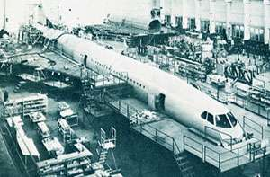
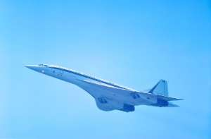
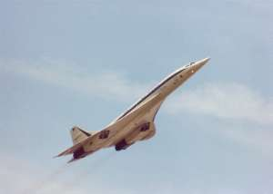
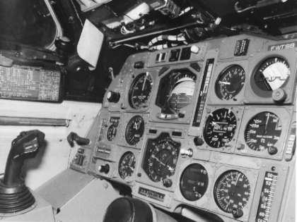
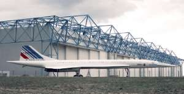

Le Concorde 201 est le premier avion de série.
Après les 2 prototypes et les 2 pré-séries, le 201 est plus lourd et plus puissant que ses devanciers, afin de pouvoir respecter le cahier des charges : Mach 2, 100 passagers jusqu'à New York sans escale.
Assemblage final du 201 à la FAL de Toulouse :

Livré avec les anciennes couleurs d'Air France et l'immatriculation F-WTSB :


En service pendant 12 années, du 6 décembre 1973 au 19 avril 1985, le 201 a peu volé ; 423 vols avec 910h de vols.
Cet appareil illustre parfaitement qu'au delà de l'échec commercial, Concorde a catapulté l'aéronautique civile Européenne au premier plan mondial, alors qu'elle était moribonde depuis la fin de la seconde guerre mondiale. En effet, le 201 a été le premier avion de ligne équipé expérimentalement d'un mini manche latéral, qui sera appliqué plus tard sur l'A320, puis sur toute la gamme Airbus, avec le succès que l'on sait.

Aujourd'hui, SB coule une retraite paisible près de son lieu de naissance, à Toulouse, sur le site Airbus. Il a été repeint aux nouvelles couleurs d'Air France (le code barre sur la dérive).
